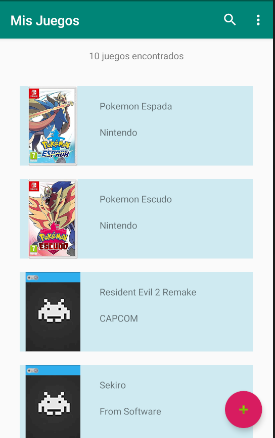
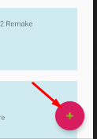
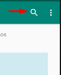
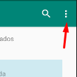
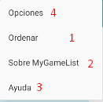

Listado
En la actividad listado se muestra información breve de
los juegos añadidos a MyGameList.

Con el botón flotante podrás añadir nuevos juegos a la lista.

Con el botón buscar podrás usar el filtro para buscar el juego deseado.

Para más información ir al manual de
buscar
En el submenú podrás encontrar otras funciones como ordenar
o ir a otras páginas como la ayuda o "sobre la app".


1.- Ordenar: ordena la lista de juegos según el parámetro indicado (todavía no implementado)
2.- Sobre MyGameList: ir a sobreActivity
3.- Ayuda: ir a la ayuda según la actividad en la que está.
4.- Opciones: opciones sobre la App (todavía no implementado)